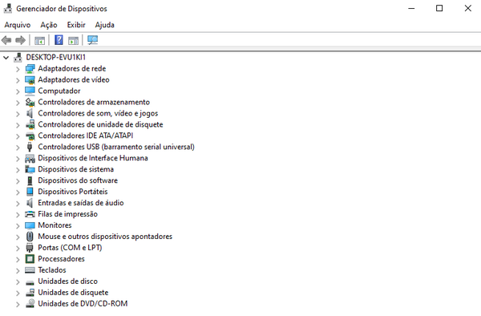

Os dispositivos que compõem um computador, como monitor, impressora, mouse, teclado, placas de vídeo, de áudio, entre outros, para se comunicar com os softwares do computador ou serem operados por eles, precisam de um Controlador de Dispositivo, comumente chamado de Driver, que é um software capaz de interpretar os sinais retornados por esses dispositivos. As versões mais recentes do Windows possuem a capacidade de baixar e atualizar esses drivers automaticamente, até mesmo depois de uma formatação, facilitando a tarefa que os técnicos, até pouco tempo atrás tinham, de procurar e baixar esses drivers e instalá-los sempre que formatavam um computador. Mesmo assim, em algum momento teremos de excluir, instalar ou atualizar um driver, e isso fazemos por meio do Gerenciador de Dispositivos.
No Gerenciador de Dispositivos encontramos a lista com todos os drivers instalados, sempre que conectamos um dispositivo novo, essa lista é atualizada, e caso não haja um driver para esse dispositivo, ou não seja possível baixá-lo, ele aparecerá na lista com uma exclamação e com o título Dispositivo Desconhecido, por onde é possível inserir seu drive manualmente, caso você o possua salvo em sua máquina, ou procurar por ele na internet por meio do Windows Update.
Geralmente, ao obtermos atualizações do Windows por meio do Windows Update, os drivers também são atualizados.
Você pode acessar o Gerenciador de Dispositivos clicando no menu Iniciar → Sistema do Windows → Painel de Controle. E no Painel de Controle ir até Hardware e Sons → Gerenciador de Dispositivos.
Você pode ainda abrir o aplicativo Gerenciador de Dispositivos pressionando ⊞+R e digitando: devmgmt.msc